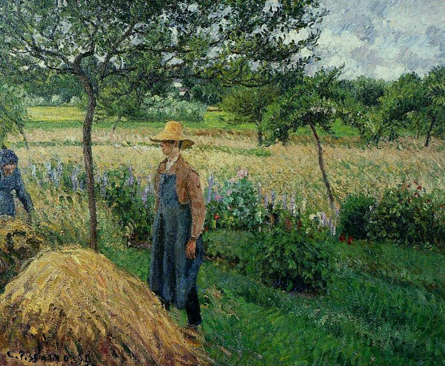

Camille Pissarro,1830 - 1903,"Impressionism,Post-Impressionism",French,"Camille Pissarro (French: [kamij pisaʁo]; 10 July 1830 – 13 November 1903) was a Danish-French Impressionist and Neo-Impressionist painter born on the island of St Thomas (now in the US Virgin Islands, but then in the Danish West Indies). His importance resides in his contributions to both Impressionism and Post-Impressionism. Pissarro studied from great forerunners, including Gustave Courbet and Jean-Baptiste-Camille Corot. He later studied and worked alongside Georges Seurat and Paul Signac when he took on the Neo-Impressionist style at the age of 54.",https://en.wikipedia.org/wiki/Camille_Pissarro,91
